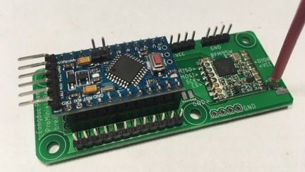
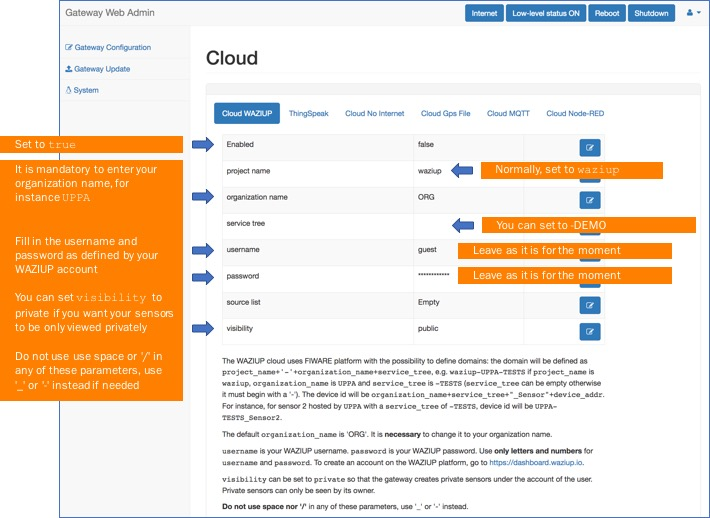
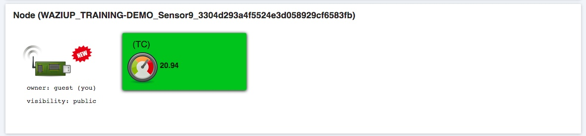

Arduino LoRa demo sensor
Overview
Arduino_LoRa_Demo_Sensor is a very simple demo sketch for training purpose. The main program, i.e. Arduino_LoRa_Demo_Sensor.ino can be left unchanged by the students. They just have to add/modify code in my_demo_sensor_code.h and my_demo_sensor_code.cpp to adapt the code for a given physical sensor. The provided example reads from either an LM35DZ or a TMP36 analog temperature sensor.
Arduino board with LoRa radio module
We will use an Arduino Nano mounted on a simple PCB which hosts the RFM95 LoRa radio module.

The first one is freely available (Gerber files for the PCB manufacturer) from our github: https://github.com/CongducPham/LowCostLoRaGw#pcbs. You can also find on this github Gerber file of other LoRa components to build a whole device-gateway LoRa solution. We also have the PCB to host an Arduino ProMini if you are using this board.

The other Nano breakout board is the WaziNano board developed within the WAZIUP/WAZIHUB projects. It has an integrated antenna which is realized in collaboration with Pr. F. Ferrero from University of Nice.

There is also the WaziDev board developed within the WAZIUP/WAZIHUB projects that specifically targets integration purpose as the microcontroller is directly integrated into the board. Additionally, the WaziDev has many features compared to other available boards on the market: integrated MOSFET for high power modules (such as GPS), possibility of activate or deactivate various LEDs for energy optimization purposes,...
Code example
For better understanding, we will define some important basic parameters for the LoRa sensor to start with.
In the header file "my_demo_sensor_code.h" .
We define the PIN to read the value from the sensor. For this example, we will use PIN A0 to read the output of the sensor.
#define PIN_READ A0
then we define the pin to power up the board. For this example, we selected pin 9. You can also connect the sensor directly to a VCC pin for this simple example but then you will not be able to power down the connected sensor.
#define PIN_POWER 9
also chose appropriate voltage scale for the board, 3300.0 for 3.3V and 5000.0 for 5V. The Arduino Nano is a 5V board. For the ProMini, we advise the 3.3V version but if you have the 5V version, set the voltage scale to 5000.0. The WAZIDev board is a 3.3V board. If you are using a digital sensor you probably don't need the scaling factor.
#define VOLTAGE_SCALE 3300.0
In the file "my_demo_sensor_code.cpp" .
We start with defining the nomenclature. Here, you can use a maximum of 3 characters. If you need more characters, just increase the size of the char array (be careful, the number of available characters is the size of the char array minus 1). But we recommend to not go beyond 5 characters because these characters will be sent wirelessly so more characters means longer packets. Here TC is a short way to refer to temperature in celcius. If you use a photoresistor, you can change the nomenclature string to LUM for instance. Note that it is a completely user-defined string that will be used in the cloud platform to better interpret the sensed value.
char nomenclature_str[4]="TC";
We defined function sensor_Init() for initialization of the input and output pin for the temperature sensor.
void sensor_Init() { pinMode(PIN_READ, INPUT); pinMode(PIN_POWER, OUTPUT); }
In function sensor_getValue(), we define the way we read a value from the temperature sensor. In this example, we are using LM35DZ simple analog temperature sensor. You should verify the equation to calculate the sensed value for the sensor you are using. If you want to use one of the sensors you saw in previous examples (for instance the photoresistor or the DHT22), you have to use appropriate copy/paste to adapt the code to the sensor you are using.
double sensor_getValue() { //power up the sensor digitalWrite(PIN_POWER, HIGH ); //wait a bit delay(500); //read the raw sensor value int value = analogRead(PIN_READ); //power down the sensor digitalWrite(PIN_POWER, LOW); Serial.print(F("Reading ")); Serial.println(value); double sensor_value; //change here how the temperature should be computed depending on your sensor type sensor_value = (value*VOLTAGE_SCALE/1024.0)/10; return sensor_value; }
Here is the WAZINano board with the analog LM35DZ temperature sensor that will be used

Lets move on to the main program, the sketch named "Arduino_LoRa_Demo_Sensor.ino" .
We start by adding the SX1272 library developed by UPPA (github:https://github.com/CongducPham/LowCostLoRaGw).
#include "SX1272.h"
An important issue regarding the radio modules is the power amplification. The Semtech SX1272/76 has actually 2 lines of RF power amplification (PA): a high efficiency PA up to 14dBm (RFO) and a high power PA up to 20dBm (PA_BOOST). Setting transmission power to L (Low), H (High), and M (Max) only uses the RFO and delivers 2dBm, 6dBm and 14dBm respectively. x (extreme) and X (eXtreme) use the PA_BOOST and deliver 14dBm and 20dBm respectively.
However, even if the SX1272/76 chip has the PA_BOOST and the 20dBm features, not all radio modules (integrating these SX1272/76) have the appropriate wiring and circuits to enable these features: it depends on the choice of the reference design that itself is guided by the main intended frequency band usage, and sometimes also by the target country's regulations (such as maximum transmitted power). So you have to check with the datasheet whether your radio module has PA_BOOST (usually check whether the PA_BOOST pin is wired) and 20dBm capability before using x or X. Some other radio modules only wire the PA_BOOST and not the RFO resulting in very bad range when trying to use the RFO mode (L, H, and M). In this case, one has to use x to indicate PA_BOOST usage to get 14dBm.
Practically, we only use either M (Max) or x (extreme) to have maximum range. They both deliver 14dBm but the difference is whether the RFO pin is used or the PA_BOOST. Therefore, when uploading a sketch on your board, you have to check whether your radio module needs the PA_BOOST in order to get significant output level in which case x should be used instead of M. All the examples start with this PA_BOOST setting.
Uncomment PABOOST if your radio is an HopeRF RFM92W, HopeRF RFM95W, Modtronix inAir9B (if inAir9, leave commented), NiceRF1276 or you know from the circuit diagram that output use the PABOOST line instead of the RFO line. If you have another non listed radio module, try first by leaving PABOOST commented, then see whether the packet reception is correct with a reasonably high SNR (such as 6 to 10 dB) at some meters of the gateway. If not, then try with PABOOST uncommented.
#define PABOOST
You can change the LoRa node address here. It is important if you are working in several groups that each physical device has a different address. So coordinate with the other students to use a different address for each device. The address is a numeric value between 2 and 255.
#define node_addr 9
We define the default destination address to transmit the sensed values
#define DEFAULT_DEST_ADDR 1
We define the LoRa mode to be used, see the table 1 at the end of this page for predefined LoRa modes
#define LORAMODE 1
In the setup() function, we set up and initialize all the required parameters. At first, we switch the module ON
sx1272.ON();
Then we set the transmission mode of LoRa module
e = sx1272.setMode(LoraMode);
Enable the carrier sense mechanism
sx1272._enableCarrierSense=true;
Select the frequency channel for communication. See the table 2 at the end of this page for predefined frequency channels.
e = sx1272.setChannel(CH_10_868);
Select amplifier line; PABOOST or RFO
#ifdef PABOOST sx1272._needPABOOST=true; #endif
Set the Power level
sx1272.setPowerDBM((uint8_t)MAX_DBM);
Set the node address
sx1272.setNodeAddress(node_addr);
Initialization of the demo sensor
sensor_Init();
Then we move on to the loop() function, which is supposed to run in a loop forever. First we call the function sensor_getValue() which we defined in my_demo_sensor_code.cpp to get the sensed value.
sensor_value = sensor_getValue();
Here we write the message that will be sent. We use the following format \!TC/22.5 for instance. The \! prefix will trigger at the gateway the upload of the received data to remote clouds. Remember that nomenclature_str is defined previously in my_demo_sensor_code.h as "TC".
r_size=sprintf((char *)message, "\\!%s/%d" , nomenclature_str, (int)sensor_value);
Then we check for the idle carrier, depending whether we enabled the carrier sense mechanism or not (earlier in the setup() we enabled the carrier sense mechanism).
sx1272.CarrierSense();
We also indicate that it is a simple data packet that is being sent
sx1272.setPacketType(PKT_TYPE_DATA);
And finally, we send the message to the gateway
sx1272.sendPacketTimeout(DEFAULT_DEST_ADDR, message, pl);
After transmission, we remain idle for 1 minute
nextTransmissionTime=millis()+60000;
If you open the Arduino IDE's Serial Monitor window, you should see something like the following output
Simple LoRa sensor demo SX1276 detected, starting SX1276 LF/HF calibration ... Setting Mode: state 0 Setting Channel: state 0 Setting Power: state 0 Setting node addr: state 0 SX1272 successfully configured Reading 65 (Sensor value is 20.95 Sending \!TC/20.94 Real payload size is 10 --> CS1 --> CAD 551 OK1 --> RSSI -122 LoRa pkt seq 0 LoRa Sent in 1407 LoRa Sent w/CAD in 1960 Packet sent, state 0
The raw source of the sketch example is visible here.
For the detailed working example, you can refer to our Arduino LoRa example github page.
Our LoRa communication library
You can have a look at our developer's guide at github:https://github.com/CongducPham/tutorials [local link] which lists and describes all available functions to handle LoRa communications between devices and gateways, but also from device to device if this is required.
Pre-defined LoRa modes and Pre-defined frequency channels
| mode | BW | SF |
|---|---|---|
| 1 | 125 | 12 |
| 2 | 250 | 12 |
| 3 | 125 | 10 |
| 4 | 500 | 12 |
| 5 | 250 | 10 |
| 6 | 500 | 11 |
| 7 | 250 | 9 |
| 8 | 500 | 9 |
| 9 | 500 | 8 |
| 10 | 500 | 7 |
Pre-defined channels in 868MHz, 915MHz and 433MHz band (most of them from initial Libelium SX1272.h, except those marked with *). Frequencies in bold are those used by default in each band.
| ch | F(MHz) | ch | F(MHz) | ch | F(MHz) |
|---|---|---|---|---|---|
| 04 | 863.2* | 00 | 903.08 | 00 | 433.3* (default) |
| 05 | 863.5* | 01 | 905.24 | 01 | 433.6* |
| 06 | 863.8* | 02 | 907.40 | 02 | 433.9* |
| 07 | 864.1* | 03 | 909.56 | 03 | 434.3* |
| 08 | 864.4* | 04 | 911.72 | - | - |
| 09 | 864.7* | 05 | 913.88 (default) | - | - |
| 10 | 865.2 (default) | 06 | 916.04 | - | - |
| 11 | 865.5 | 07 | 918.20 | - | - |
| 12 | 865.8 | 08 | 920.36 | - | - |
| 13 | 866.1 | 09 | 922.52 | - | - |
| 14 | 866.4 | 10 | 924.68 | - | - |
| 15 | 867.7 | 11 | 926.84 | - | - |
| 16 | 867.0 | 12 | 915.00 | - | - |
| 17 | 868.0 | - | - | - | - |
| 18 | 868.1* | - | - | - | - |
Next step: Gateway and WAZIUP data platform
LoRa devices send data to a LoRa gateway. It is beyond the scope of this online tutorial to describe all the steps to build a low-cost LoRa gateway but you can find all the necessary information from the following links.
- Web page describing how to build a low-cost LoRa gateways
- GitHub repository with a complete LoRa solution developed as part of the WAZIUP/WAZIHUB project
- Dedicated tutorial showing how you can build and configure the LoRa gateway with a Raspberry PI to start pushing data to the cloud [local link]
- Dedicated tutorial explaining the gateway's web admin interface extension to easily configure and update your gateway [local link]
Here is the tutorial video from our YouTube channel for the gateway part.
We assume that a gateway is available for the training or you built such gateway. Note that with the simple PCB (WAZIHat for instance) to host the LoRa radio module for the gateway, it is very easy to build the gateway with a regular Raspberry PI3 and the SD card image provided on our web page describing how to build a low-cost LoRa gateways.
With the WAZIHat With the RFM95 breakout freely available from our github: https://github.com/CongducPham/LowCostLoRaGw#pcbs
With the RFM95 breakout freely available from our github: https://github.com/CongducPham/LowCostLoRaGw#pcbs

If you have the default configuration for both the device and gateway (i.e. LoRa mode 1 and CH_10_868=865.2MHz) then both components can communicate: the gateway is receiving data sent by the demo device, for instance \!TC/22.5.
Configuring the gateway
If you are working in groups where a gateway has been installed, do not perform these steps unless instructed by the instructor
Connect your gateway to a DHCP network to have Internet connectivity
Your gateway also acts as a WiFi access point. Search for WAZIUP_PI_GW_XXXXXXXXXX
Connect to this WiFi, password is loragateway
Use a web browser (you can use a smartphone or tablet for instance) and open http://192.168.200.1/admin
Login: admin and Password: loragateway
Go to the Cloud menu and select the Cloud WAZIUP tab
First, enable the WAZIUP cloud if needed
Leave project_name as waziup. If you are deploying for another project, you can enter here your project name.
Set organization_name to WAZIUP_TRAINING for instance
Set service_tree to -DEMO for instance
Leave the other fields unchanged
Last step is to reboot the gateway for changes to take effects. Wait about 1 minute, then power your LoRa demo end-device. With the provided configuration, the gateway will upload the demo device's temperature on the WAZIUP cloud.
The WAZIUP data cloud platform
To see your data on the WAZIUP data cloud platform, go to https://dashboard.waziup.io and log in as guest
Login: guest and Password: guest
It is important to understand that the name of end-devices is set by the gateway when receiving data from the end-device and when upload data to clouds. The gateway retrieves the numeric address of an end-device (between 2 and 255) and will build a more comprehensive name, depending on the naming configuration for each cloud defined on the gateway.
With the above gateway configuration for the WAZIUP cloud, the name of your device is WAZIUP_TRAINING-DEMO_Sensor9_xxxxxxxxxxxxxxxxxxxxxxxxxxxxxxxx as the device's address is 9. You can see that the device name is defined as organization_name+service_tree+"_Sensor"+device_address. Also, as you are using the WAZIUP guest account, the base name WAZIUP_TRAINING-DEMO_Sensor9 is appended with the MD5 hash of your gateway id. The MD5 hash can be found on the gateway's web admin interface in the Gateway Configuration menu and Gateway tab.

Here, our gateway id is 00000027EB5A71F7 and therefore the MD5 hash is 3304d293a4f5524e3d058929cf6583fb . The gateway id is automatically determined from the gateway's network MAC address so you do not need to modify it. We advise you to use the default gateway id based on the gateway network MAC address.
Therefore, in our setting, we can search on the WAZIUP dashboard the device WAZIUP_TRAINING-DEMO_Sensor9_3304d293a4f5524e3d058929cf6583fb. In your case, you will have a different MD5 hash value but the base name will be the same.
The final step is to create an account on the WAZIUP dashboard. Go to https://dashboard.waziup.io and follow procedure to create an account with a user name and a password. Use only letters and numbers for user name and password.
Once you have your user name and password, go on the gateway's web admin interface, select Cloud menu and the Cloud WAZIUP tab to enter these information into the corresponding field.
Reboot the gateway for changes to take effects. Wait about 1 minute, then power your LoRa demo end-device.
Then go again to https://dashboard.waziup.io and log in with your user name and password. You should see your device, this time without the gateway's id MD5 hash because you have been identified as a registered user.

If you want to recover data points from the WAZIUP platform in order to develop new IoT applications, you can have a look at the WAZIUP API tutorial pages. If your application is written in Javascript, you can use the WAZIUP library instead of using directly the API.
You can also have a look at the following video that shows how to set up an operational gateway in less than 5mins.